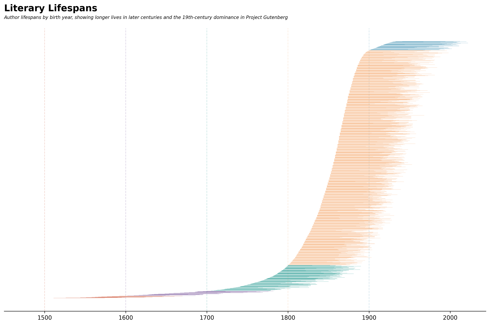
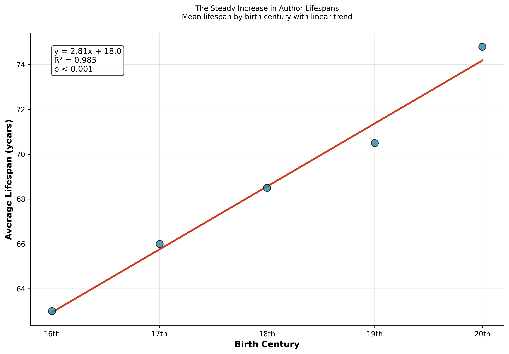

import pandas as pdimport matplotlib.pyplot as pltimport seaborn as snsimport matplotlib.patches as patchesimport pydytuesdayfrom scipy import statsimport numpy as npprint("Tidy Tuesday Analysis")print(f"Data from: 2025-06-03")
Tidy Tuesday Analysis
Data from: 2025-06-03
# set working directory (only for line by line coding)# comment out when rendering!#os.getcwd()#os.chdir(os.getcwd() + '/2025-06-03')
Load Data
# Load this week's data using PyDyTuesdaytt = pydytuesday.get_date('2025-06-03')
Trying to fetch README from: https://raw.githubusercontent.com/rfordatascience/tidytuesday/refs/heads/main/data/2025/2025-06-03/readme.md
Successfully fetched README from: https://raw.githubusercontent.com/rfordatascience/tidytuesday/refs/heads/main/data/2025/2025-06-03/readme.md
Downloading gutenberg_authors.csv...
Successfully saved gutenberg_authors.csv to /Users/kylieainslie/Library/CloudStorage/Dropbox/Mac/Documents/pydy-tuesday/2025-06-03/gutenberg_authors.csv
Downloading gutenberg_languages.csv...
Successfully saved gutenberg_languages.csv to /Users/kylieainslie/Library/CloudStorage/Dropbox/Mac/Documents/pydy-tuesday/2025-06-03/gutenberg_languages.csv
Downloading gutenberg_metadata.csv...
Successfully saved gutenberg_metadata.csv to /Users/kylieainslie/Library/CloudStorage/Dropbox/Mac/Documents/pydy-tuesday/2025-06-03/gutenberg_metadata.csv
Downloading gutenberg_subjects.csv...
Successfully saved gutenberg_subjects.csv to /Users/kylieainslie/Library/CloudStorage/Dropbox/Mac/Documents/pydy-tuesday/2025-06-03/gutenberg_subjects.csv
Downloading meta.yaml...
Successfully saved meta.yaml to /Users/kylieainslie/Library/CloudStorage/Dropbox/Mac/Documents/pydy-tuesday/2025-06-03/meta.yaml
Downloading pg-logo-129x80.png...
Successfully saved pg-logo-129x80.png to /Users/kylieainslie/Library/CloudStorage/Dropbox/Mac/Documents/pydy-tuesday/2025-06-03/pg-logo-129x80.png
Data Exploration
There are four data sets in this week’s Tidy Tuesday. We’ll take a look at each of them.
We’ll focus on just the authors data set. Our specific question of interest is how do authors’ lifespans change over time? To do this, we need to do a little data wrangling before visualising.
Data Wrangling
# Create a copy to avoid the warningdf = df_auth.copy()# Remove authors with missing birth/death yearsdf = df.dropna(subset=['birthdate', 'deathdate'])# Sort by birth yeardf = df.sort_values('birthdate').reset_index(drop=True)# Filterdf = df[df['birthdate'] >1499]# Assign colors based on century (handling BCE dates)def get_century(year):if year <0: # BCEreturn-((abs(year) -1) //100+1) # Negative century for BCEelse: # CEreturn (year -1) //100+1century_colors = { 15: '#F18F01', # Warm Orange - 15th century16: '#C73E1D', # Rich Red - 16th century17: '#592E83', # Deep Purple - 17th century18: '#048A81', # Teal Green - 18th century19: '#F4A261', # Soft Orange - 19th century20: '#2E86AB', # Ocean Blue - 20th century21: '#E76F51', # Coral - 21st century}df['century'] = df['birthdate'].apply(get_century)df['color'] = df['century'].map(century_colors).fillna('#808080') # Gray for others
Visualizations
# Create the plotfig, ax = plt.subplots(figsize=(12, 8))# Plot each author's lifespan as a horizontal barfor i, row in df.iterrows():# Create the lifespan bar bar_height =0.6 ax.barh(i, row['deathdate'] - row['birthdate'], left=row['birthdate'], height=bar_height, color=row['color'], alpha=0.7, #edgecolor='black', linewidth=0.5)# Set y-axis#ax.set_ylim(-0.5, len(df) - 0.5)ax.set_yticks([])# Set x-axis limits with some paddingmin_year = df['birthdate'].min() -50max_year = df['deathdate'].max() +20ax.set_xlim(min_year, max_year)min_century =int(df['birthdate'].min() //100) +1max_century =int(df['birthdate'].max() //100) +1# Add vertical lines at the start of each centuryfor century inrange(min_century, max_century +1): century_start = (century -1) *100if century_start >= df['birthdate'].min(): color = century_colors.get(century, '#808080') ax.axvline(x=century_start, color=color, linestyle='--', linewidth=1, alpha=0.2, zorder=0)# Style the plotax.spines['top'].set_visible(False)ax.spines['right'].set_visible(False)ax.spines['left'].set_visible(False)ax.set_title('Literary Lifespans', fontsize=16, fontweight='bold', pad=30, loc='left')ax.text(0.0, 1.03, 'Author lifespans by birth year, showing longer lives in later centuries and the 19th-century dominance in Project Gutenberg', transform=ax.transAxes, ha='left', va='bottom', fontsize=8, style='italic', wrap=True)plt.tight_layout()plt.show()

Author lifespans over time
Analysis
We created a visualisation to look at author lifespan over time, so let’s assess statistically whether average author lifespan is longer if the author was born more recently.
First, we’ll calculate summary statistics by birth century.
Next, we’ll perform some statistical tests to explore the relationship between century of birth and mean lifespan.
# Overall statisticsoverall_mean = df_analysis['lifespan'].mean()overall_std = df_analysis['lifespan'].std()print(f"Overall mean lifespan: {overall_mean:.1f} years")print(f"Overall standard deviation: {overall_std:.1f} years")print()# Test for increasing lifespan over timecenturies = century_stats.index.valuesmean_lifespans = century_stats['Mean'].values# Correlation testcorrelation, p_value = stats.pearsonr(centuries, mean_lifespans)print(f"Correlation between century and mean lifespan: {correlation:.3f}")print(f"P-value: {p_value:.6f}")if p_value <0.05:print("✓ Statistically significant correlation (p < 0.05)")else:print("✗ Not statistically significant (p ≥ 0.05)")print()# Linear regressionslope, intercept, r_value, p_value_reg, std_err = stats.linregress(centuries, mean_lifespans)print(f"Linear regression:")print(f" Slope: {slope:.2f} years per century")print(f" R-squared: {r_value**2:.3f}")print(f" P-value: {p_value_reg:.6f}")print()# ANOVA test (comparing centuries)century_groups = [df_analysis[df_analysis['birth_century'] == c]['lifespan'].values for c in centuries]f_stat, p_value_anova = stats.f_oneway(*century_groups)print(f"ANOVA test (comparing all centuries):")print(f" F-statistic: {f_stat:.2f}")print(f" P-value: {p_value_anova:.6f}")if p_value_anova <0.05:print("✓ Significant differences between centuries (p < 0.05)")else:print("✗ No significant differences between centuries (p ≥ 0.05)")print()
Overall mean lifespan: 70.4 years
Overall standard deviation: 14.2 years
Correlation between century and mean lifespan: 0.992
P-value: 0.000791
✓ Statistically significant correlation (p < 0.05)
Linear regression:
Slope: 2.81 years per century
R-squared: 0.985
P-value: 0.000791
ANOVA test (comparing all centuries):
F-statistic: 43.57
P-value: 0.000000
✓ Significant differences between centuries (p < 0.05)
plt.figure(figsize=(10, 7))# Plot data pointsplt.scatter(centuries, mean_lifespans, s=100, color='#2E86AB', alpha=0.8, edgecolors='black', linewidth=1, zorder=3, label='Century averages')# Plot fitted lineline_x = np.linspace(centuries.min(), centuries.max(), 100)line_y = slope * line_x + interceptplt.plot(line_x, line_y, color='#C73E1D', linewidth=2.5, label=f'Linear trend: +{slope:.2f} years/century')# Add equation and R² to the plotequation_text =f'y = {slope:.2f}x + {intercept:.1f}\nR² = {r_value**2:.3f}\np < 0.001'plt.text(0.05, 0.95, equation_text, transform=plt.gca().transAxes, bbox=dict(boxstyle='round', facecolor='white', alpha=0.8), verticalalignment='top', fontsize=11)# Formattingplt.xlabel('Birth Century', fontsize=12, fontweight='bold')plt.ylabel('Average Lifespan (years)', fontsize=12, fontweight='bold')plt.title('The Steady Increase in Author Lifespans\nMean lifespan by birth century with linear trend', fontsize=10, pad=20)# Customize x-axis labelsplt.xticks(centuries, [f'{int(c)}th'for c in centuries])# Add gridplt.grid(True, alpha=0.3, linestyle='-', linewidth=0.5)# Legend#plt.legend(loc='lower right', fontsize=11)# Add some stylingplt.gca().spines['top'].set_visible(False)plt.gca().spines['right'].set_visible(False)plt.tight_layout()plt.show()

Conclusions
Based on these data, there is strong evidence of increasing author lifespans over time. Authors’ lifespans increased by 2.81 years per century on average, which represents a substantial improvement in longevity across the time period studied. This increasing lifespan likely reflects broader improvements in medicine, nutrition, sanitation, and living conditions over the centuries. Additionally, authors may have been more likely to be from educated/wealthy classes, and thus benefiting earlier from these improvements.
Statistical Strength:
The correlation of 0.992 indicates an extremely strong positive relationship between birth century and lifespan R² = 0.985 means that 98.5% of the variation in average lifespan can be explained by the century of birth This is remarkably high for biological/demographic data